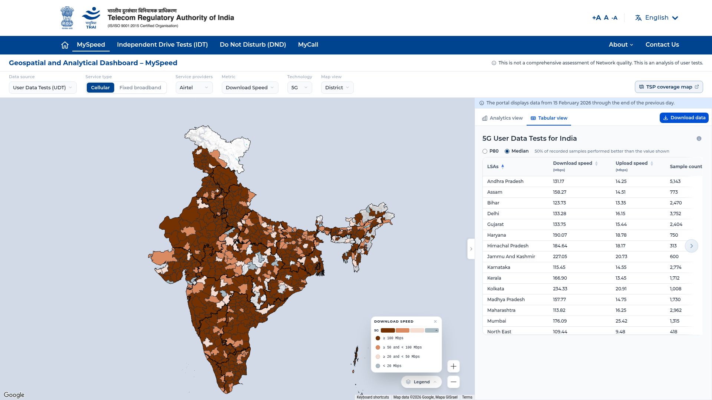

TRAI Network Anubhav: check real user-test data before choosing a network
Which mobile network should you consider? TRAI's Network Anubhav lets you inspect reported user-test speeds on a map and in tables, with provider and technology filters. It is useful evidence alongside local checks, not a guarantee of reception or speed in your home.
Why this is useful
Instead of relying on a generic answer about network quality, you can inspect TRAI's displayed user-test evidence and sample counts directly. That can help you ask better questions before buying a SIM or changing a connection.
TRAI's 4 November 2026 launch note describes user data from its MySpeed and MyCall services, separate Independent Drive Test data, and a DND web interface. This guide covers only the read-only MySpeed user-test dashboard. We did not test DND registration, spam complaints, MyCall submissions or the separate drive-test dataset.
How to inspect the public dashboard
- Open the official MySpeed dashboard. Allow time for the map, operators and results to load. In our session, data took several minutes to become fully usable.
- Keep Data source: User Data Tests (UDT). Choose Cellular for the mobile-network view. Fixed broadband is a separate choice, not a mobile-network comparison.
- Change Metric from Coverage to Download Speed. Check the Technology field: it changed to 5G during our test. Do not read a 5G result as a result for every device or network generation.
- Choose Map view: District, then Apply filters when shown. This draws district-level colours. The analytics panel can still show all-India statistics, so read its title before interpreting a number.
- Open Tabular view. Our table was organised by telecom Licensed Service Areas (LSAs), with Kerala as one row. The table's geographic grouping is not the same as a selected district map view.
- Choose a service provider and apply the filter again. Read the active provider, technology, metric, geography, statistic and sample count together. Wait for results to update before comparing.
What happened in our test?
We selected Cellular, Download Speed, 5G and District, then applied the filters. A coloured district map and analytics loaded. Switching to Tabular view showed a Kerala row. With All TSP selected, the table showed a median download speed of 145.07 Mbps from 6,010 samples.
We then changed the service provider to Airtel and applied the filter. The Kerala row changed to a median download speed of 166.90 Mbps from 1,712 samples. This confirmed the provider filter changed the returned results, rather than merely changing a dropdown label.
These are dated interface observations, not a network ranking. The all-provider figure already includes samples from individual providers. The samples are not a controlled, equal-sized comparison. Do not conclude that one operator is best for Kerala, your district or your room from these two figures.

Read the numbers carefully
- Median (P50) is the middle test result, not a minimum promised speed. Half the recorded samples performed better than the displayed value.
- P80 is described by TRAI here as the level that 80% of recorded samples meet or exceed. Do not confuse it with the faster-than-80%-of-tests interpretation sometimes used elsewhere. We used the Median view for the observations above.
- Sample count matters. A large count still does not mean tests cover every street, indoor location, device or time of day.
- The date range matters. During our test, the portal said it showed data from 15 February 2026 through the end of the previous day. It was not a live speed reading for our device.
- No data is not proof of no service. User-test observations depend on where people tested. TRAI explicitly says this is not a comprehensive assessment of network quality.
Before you switch a SIM or broadband plan
Use these results as one input. Ask people using the service at your exact location, check your device and plan's supported technology, and review the operator's coverage information. Indoor reception, congestion and the time of day can differ from aggregated tests.
Do not treat the Coverage layer as an operator's complete guaranteed coverage map. The dashboard separately links to TSP coverage maps. User tests, operator coverage claims and TRAI independent drive tests are different evidence sources.
Access, privacy and limits
The dashboard worked without signup or payment in our session. We did not submit a phone number, share location, run a speed test, download reports or change any DND preferences. This establishes public viewing for the tested route, not the conditions for every service in the portal.
It is an online service with a Google map, not an offline tool. Avoid sharing location unless you want to use a location-based feature. Public viewing does not require you to submit another person's phone number or credentials. We have not audited retention, analytics or the processing of uploaded tests.
The interface initially remained on loading messages before the map and statistics arrived. If it is slow, do not mistake an empty panel for a zero result. We did not verify every operator, technology, region or mobile-browser layout.
Official sources
- TRAI: Network Anubhav platform overview - scope, filters, percentile definitions and limits.
- TRAI launch note, 4 November 2026 (PDF) - launch and consumer services.
- Network Anubhav citizen homepage - official entry and service descriptions.
- Public MySpeed dashboard - tested map, filters, analytics and tables.